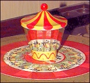
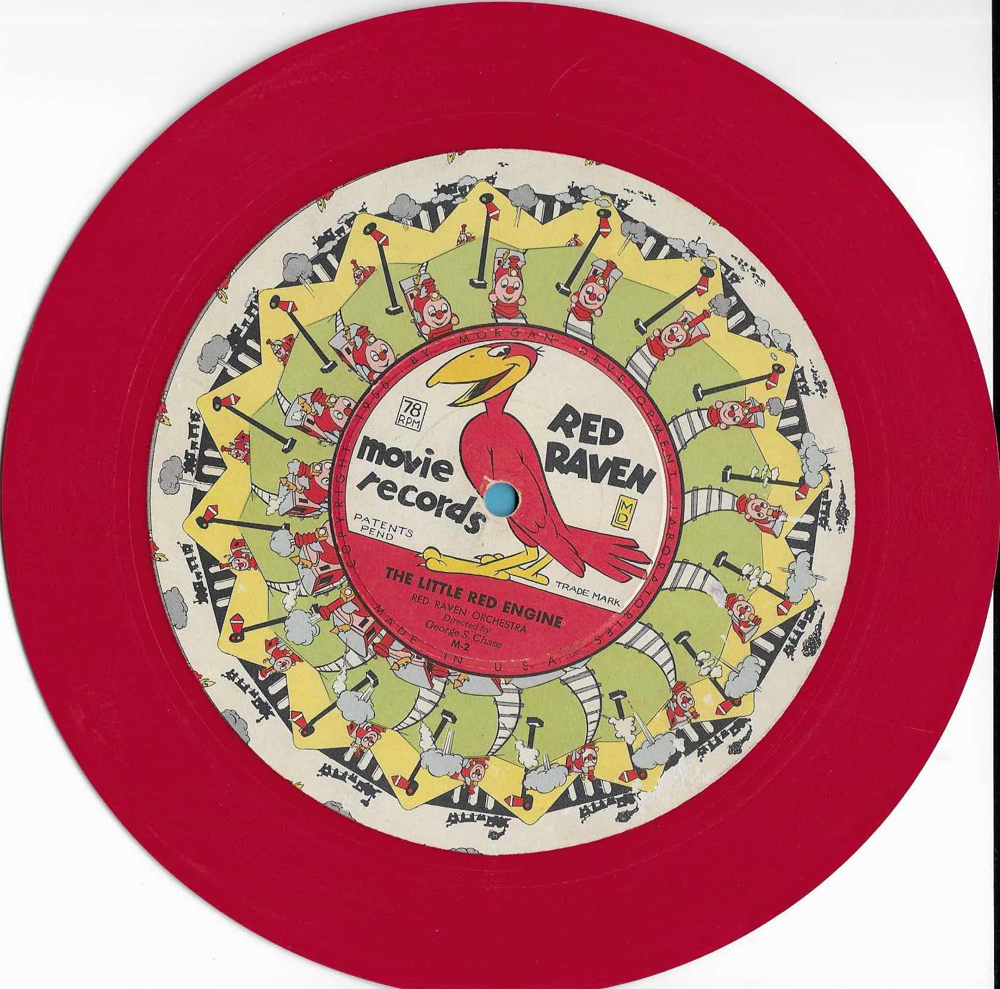

High on a shelf in a cluttered garage lay a set of colorful 78rpm records in a decades-old carboard box. These records had labels with a "Red Raven" logo and animation frames, and were clearly part of a child's toy.
These were Red Raven Magic Mirror records. The toy's "gimmick" was a "carousel"; a truncated cone* with 16 mirrors that was intended to be put on top of the record. As the record played, one could see animations in the mirrors. details...
|  |  |
| The carousel atop one of the records, in "play" mode, and a typical record with its animation frames | |
I wanted to see the animation, despite not having the mirrored carousel. But!!! I have a computer, a web browser, access to a flatbed scanner, and I can write simple javascript and python. So, task seemed both feasible and fun.
As I was writing the first cut at animation, I noticed that for some of the records, the "sixteen" seemed odd. Although 16 worked in the code, the art, in some cases, suggested something different.
So I decided to do some experimentation. I used the scanned disk images and manipulated them using javascript, instead of just creating animated gifs.
Here, I replicate the animations from 24 sides of these 12 records. I added some control over display parameters (frames per revolution and virtual "turntable" speed.)
Although there are 16 mirrors in the carousel, I found that the best FPR value (frame per revolution) is sometimes different than the expected 16. To easily see this, I made FPR runtime adjustable -- and I got interesting results.
We have: a 1700x2200 image, spindle center (870,830)
Goal is 1240x1240, spindle center (620,620)
870-620=250 870+620=1490 830-620=210 830+620=1450
This gives me the crop coordinates.
python3
from PIL import Image
#Image.open("rr1.jpg").crop((250,210,1490,1450)).show()
Image.open("rr1.jpg").crop((250,210,1490,1450)).save("rr1c.jpg")
python3
# https://numpy.org/doc/stable/reference/generated/numpy.polyfit.html
import numpy as np
s = np.array([400,620,990,1200,600,900])
t = np.array([106,162,262,320,156,235])
np.polyfit(s,t,1)
array([ 0.2679515 , -3.50859735])
### y = 0.27 x - 3.5
Coded the website:
According to Wikipedia:
The Red Raven Magic Mirror and its special children's phonograph records, introduced in the US in 1956, was a 20th-century adaptation of the praxinoscope. The Magic Mirror was a sixteen-sided praxinoscopic reflector with angled facets. It was placed over the record player's spindle and rotated along with the 78 rpm record, which had a very large label with a sequence of sixteen interwoven animation frames arrayed around its center. As the record played, the user gazed into the Magic Mirror and saw an endlessly repeating animated scene that illustrated the recorded song.
The reason for a pure HTML/Javascript website -- I wanted to be able to host this on a free, no-frills, server. Python, Flask and Jinja are more appropriate for development than my "create DOM element" Javascript hack, but simple web hosting was a driving motivation.
The Python Flask code is in this repo, and that should explain the "static" and "templates" directory structure.
* According to Wikipedia: https://en.wikipedia.org/wiki/Praxinoscope
The Red Raven Magic Mirror and its special children's phonograph records, introduced in the US in 1956, was a 20th-century adaptation of the praxinoscope. The Magic Mirror was a sixteen-sided praxinoscopic reflector with angled facets. It was placed over the record player's spindle and rotated along with the 78 rpm record, which had a very large label with a sequence of sixteen interwoven animation frames arrayed around its center. As the record played, the user gazed into the Magic Mirror and saw an endlessly repeating animated scene that illustrated the recorded song.
True, it's not a cone. I would have called it a right regular hexadecagonal pyramid. But, "sixteen-sided praxinoscopic reflector with angled facets" wins, IMO.
Googling search terms "Muybridge" and "Matrix bullet time" led me to a rabbit hole, down into which here I shall not go, and to insights upon which I will not write, as there is insufficient space in the margin.